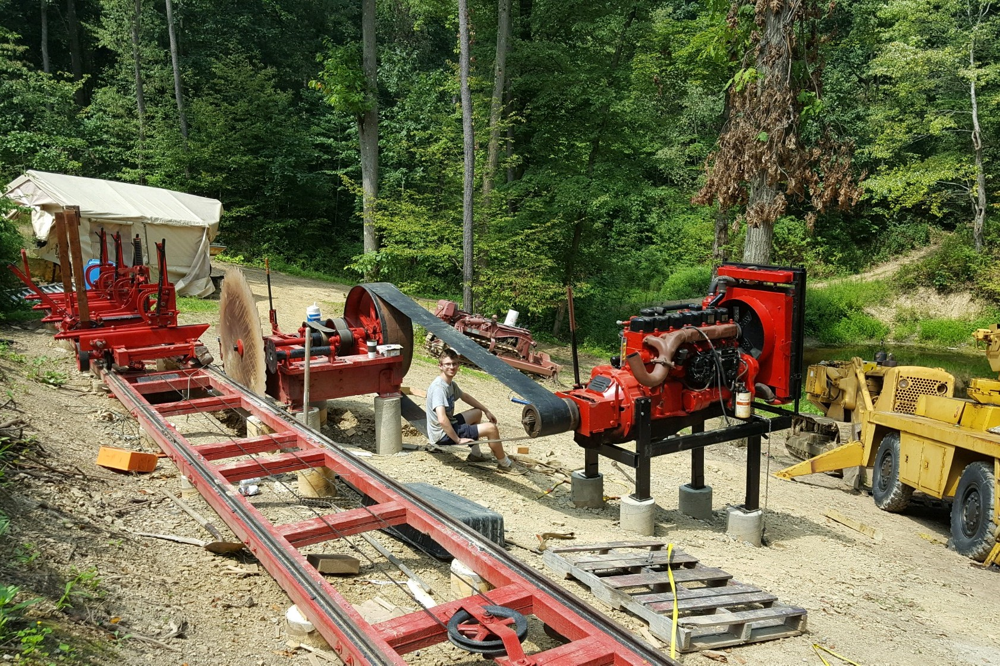

Farquhar 1948 Sawmill
2016-2017
From tree to lumber

An opportunity arose for me to buy an old sawmill for a pretty low price, and we had wanted one for a while, so I jumped on it. The sawmill was owned by an elderly widow whose husband had operated it. The mill was abandonded when he died, and sat abandonded in the forest for about 10 years, during which time the roof partially collapsed and the mill was exposed to the elements. After a very difficult process of disassembling the mill in situ and moving it back home, I had to undertake the process of refurbishing the mill and getting it back to good operating condition.
The sawmill and building as purchased.
The sawmill consists of a few key parts. The center of the mill is the husk, which is a large wooden frame that holds the drive belts and controls, and the main bearings, shaft, pulley, and the blade. The blade is a 60" diameter circular saw. The power comes from a 1960s era Mack Truck engine. As best as I can tell, the operator literally torched out the entire front end of the Mack truck, because the chassis, bumper, leafsprings, and original fuel tank were all still attached to the engine as it sat next to the mill. Positioned next to the husk is the runway, a 60 ft long set of basically small railroad rails. The runway consisted of three 15' sections. On those rails runs the carriage, perhaps the most complicated part of the mill. The carriage holds the log in place via a set of four headstocks with clamps to secure it. The headstocks are controlled by an assembly of gears, racks, and ratchets called the setworks. The setworks allows the operator to advance or retract the log by precise amounts, which dictates how much of a cut the mill will take of the log.
The husk. The belts seen here run the drive cables. There are two sets of belts wound such that you can get forward and backwards with one lever.
The setworks being removed from the carriage.
The engine and front end of the mack truck. Kitty for scale.
The process of fixing it mostly consisted of disassembling everything, thouroughly degreasing it and blasting it off with hot water to clean off 70 years of dirt and gunk that had built up on it so that I could see what was going on. From there, I identified problems and broken parts, or things that had been broken in the past and repaired poorly, and then corrected those issues. Once all issues were solved, the parts were primed and painted, then oiled or greased and reassembled. For instance, many of the headstock ways had been rusted and worn, which meant the headstocks were loose and wobbly. I had to disassemble them and mill down the T-blocks that held the headstocks in the ways to bring them back into good fit. The engine had to be torch cut out of the chassis and eventually lifted out. It was also cleaned and painted. Thankfully the engine itself was in perfect shape, and I couldn't find anything wrong with it directly. The air intake had to be remade, since the farmer had built it out of a paint can, and the generator commutator needed cleaned up (yes, generator, this was the era before alternators), but otherwise the engine was in perfect shape and ran cleanly. I would design and build a new, much slimmer frame to mount the engine.
Milling the ways for one of the headstocks
The reassembled carriage.
The setworks all cleaned, painted, and fixed up.
The mostly cleaned and painted engine after being lifted out of the chassis.
After all the parts were rebuilt, we had to install the sawmill. We augered a series of posts and casons and poured concrete to make a foundation. The runways were the first to be flown, laid and aligned to be straight, flat, and level. Then the husk was installed and aligned such that the blade was properly parallel to the runway. The flywheel was installed and balanced, the engine brought down (an very sketchy process that involved moving until the crane nearly tipped over, cribbing the engine in place, righting the crane, moving the crane closer, re-picking the engine, and repeating many times, inching our way closer. The crane couldn't handle crawling the heavy engine) and installed. The belt was then added and the tracking adjusted. Then the carriage was brought down and set on the tracks and the drive cables wound around the drum, attached to the carriage, and tensioned. Some degree of testing and double-checking was performed, and then the first log was dogged down to the carriage, the engine started, and the first boards sawn with an audience of friends and family, Champagne was consumed, and a generally good time was had by all.
The terrifying flight of the engine.
The first log being loaded.
After the I returned from college, I added some nice platforms to the mill for the operator and assistant to stand, cables so the operator can control the engine directly, railings to protect from the belt, etc. We are currently planning to build a large building to cover the mill and protect it from the elements, but for now it is protected by tarps and a carport.